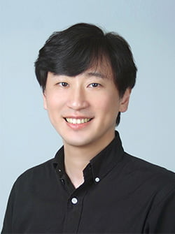

Professor

이성배 Professor Sung Bae Lee
Education
- 2005 KAIST, Department of Biological Science, Ph.D.
- 2001 Seoul National University, Department of Microbiology, M.S.
- 1999 Seoul National University, Department of Biological Science, B.S.
- 1995 Seoul Science High School
Positions
- 2021–2023 Department Chair, Department of Brain Sciences, DGIST
- 2019–present Project Leader, Basic Research Lab
- 2018–2019 Associate Vice President for External and International Affairs, DGIST
- 2012–present Assistant / Associate / Full Professor (Tenured), DGIST
- 2012 Associate Specialist, Department of Physiology, School of Medicine, UCSF
- 2007–2012 Postdoctoral Fellow, Howard Hughes Medical Institute, UCSF
- 2005–2007 Postdoctoral Fellow, Department of Biological Sciences, KAIST
Awards & Honors
- 2025 Daegu Mayor’s Commendation for Brain Research Advancement
- 2025 Nature Conference, Invited Speaker
- 2024 KSMCB Journal Contribution Award
- 2022–present Frontiers in Molecular Neuroscience, Associate Editor
- 2021 DGIST Best Teaching Award
- 2021–2023 National Research Foundation of Korea, Review Board Member
- 2021–present Molecules & Cells, Editorial Board Member
- 2018 Albert Nelson Marquis Lifetime Achievement Award
- 2017–2018 Editorial Committee Member, Naver Biochemistry Encyclopedia
- 2006 BRIC Hanbitsa Top 5 Domestic Research Achievements
- 2006 Agarwal Award, KAIST